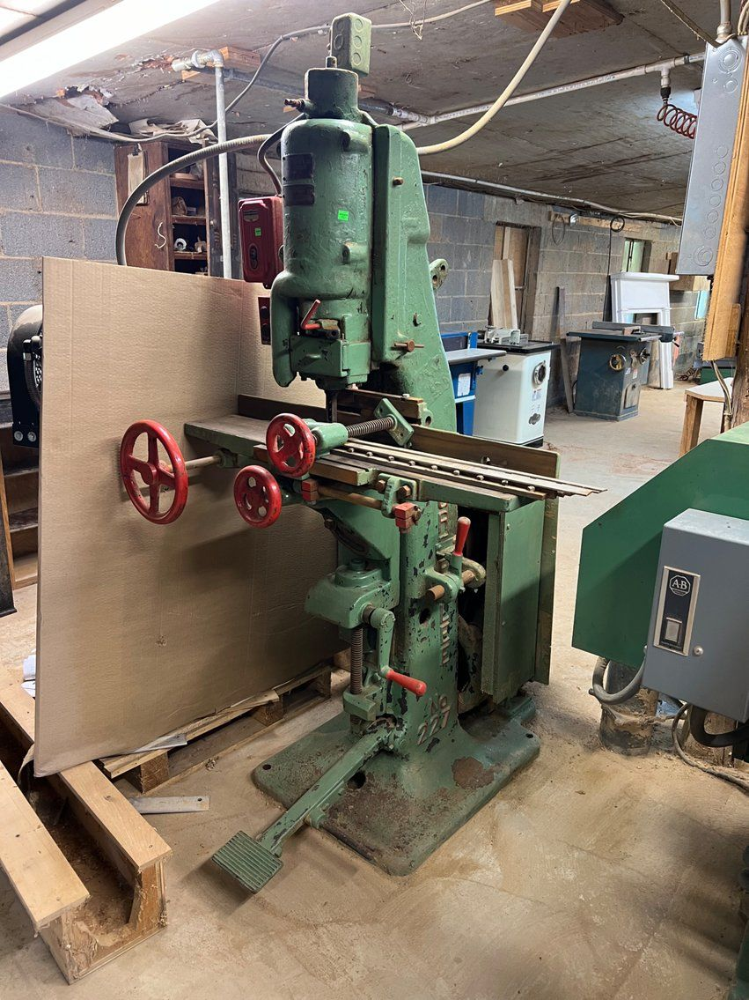
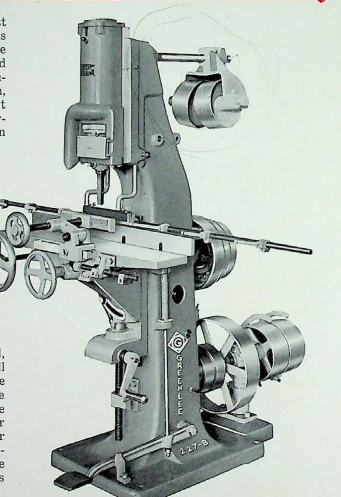

No. 227 Hollow Chisel Mortiser
Vertical precision mortising · 200-Series · Dating under research

The machine
The hollow chisel is one of woodworking’s best tricks: a square steel chisel, hollow down its middle, with an auger bit spinning inside it. The auger bores and clears the waste; the square chisel follows a breath behind and shears the corners. Press the pair into wood and out comes that impossibility, a drilled square hole. Gang the strokes along a fence and you have a mortise — crisp-cornered, flat-walled, and exactly where the layout says.
Greenlee knew this territory as well as any company alive. Its 200-Series mortisers put the idea on a heavy vertical frame with real depth control; the same thinking, scaled to a hand tool, produced the hollow chisel bits that made the Greenlee name familiar to every furniture factory in the country.
This example
The 227 is one of three machines in the restoration queue. Its serial number — and with it, its birth year — is still being traced, and its page here will grow as the research and the restoration proceed. A collection is a living thing; this is what one looks like mid-stride.
From the Catalog

“More than half a century ago the first successful hollow chisel mortiser was developed by Greenlee Bros. & Co… Today, these machines still maintain their leadership wherever accuracy and speed are of importance.” Greenlee Bulletin No. 227 · general-line catalog, 1930s
- Chisel capacity
- up to 1″ square
Catalog scan courtesy of VintageMachinery.org.